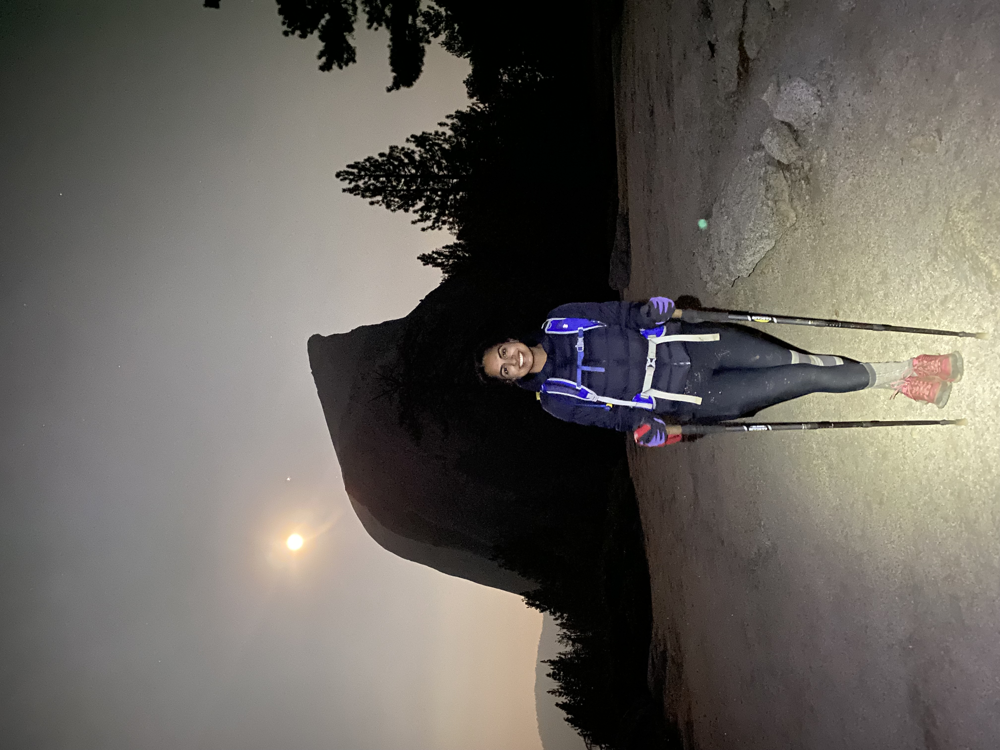

Nisha Grewal
nishagrewal314@gmail.com

About Me
I am a PhD student at the University of Edinburgh, supervised by Dr Joe Zuntz. My research centers on the applications of higher-order statistics (HoS) in weak lensing cosmology. I am interested in studying the systematics and constraining power of higher-order statistics to explore non-Gaussianity in large-scale structure of the Universe. I am an active member of the LSST Dark Energy Science Collaboration.
I am currently on the job market, looking for exciting new opportunities in weak lensing and AI. Feel free to get in touch!